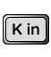

SFX-Calc User Guide
Everything you need to know about the display, keys, menu settings and limitations of SFX-Calc.
Introduction
SFX-Calc is a calculator app designed for academic, scientific and engineering purpose. The calculator features:
- Basic arithmetic calculation: Plus, Minus, Multiply, Divide
- Calculation with one operand fixed as constant
- Calculation with a non-volatile memory storage
- Calculation with 10 volatile memory storage
- Fraction and percentage calculation
- Linear regression and Statistic calculation
- Binary / Octal / Decimal / Hexadecimal calculation
- Various functions like Trigonometric, Hyperbolic, Logarithm, Exponential, Power, Root, etc.
- UI/UX similar to Casio scientific calculator
- Formula calculation including Quadratic formula, Standard Normal Distribution Probability, etc.
Usage
Display
The calculator can display up to 10 main digits + 2 exponential digits in default settings, or up to 13 main digits + 3 exponential digits by turning ON some options from the menu. Various numeric formats can be displayed in different states of operation:
The display has a top bar to indicate the current state of operation:
A non-zero value is stored in the non-volatile memory
The calculation has one operand fixed as constant
Performing Statistic calculation
Performing Linear regression
Performing Binary / Octal / Decimal / Hexadecimal calculation
Performing Trigonometric calculation with different angle unit (DEG / RAD / GRA)
Performing Formula calculation
Key reference
Every key on the keypad, what it does, and its alternative (SHIFT) function.
No keys match your search.
1
All Cancel
Clear the current operation
Clear the fixed constant operand
Clear the display result
Release the error state
Alterative function is to clear the 10 volatile memory spaces in additional to the all cancel functions, or to clear the all the stored data for the linear regression and the statistic calculation
Example
Clear the entire in-progress calculation and reset the display to 0.
→
2
Clear
Clear the current entry for correction
Example
Discard only the operand being typed (345), keeping the rest of the expression intact.
3
Alternative Function
Enable alternative function from other function keys
4
Mode Set
Base-n mode for Binary / Octal / Decimal / Hexadecimal calculation
Linear regression calculation
Trigonometric calculation will be conducted with Degree unit
Trigonometric calculation will be conducted with Radian unit
Trigonometric calculation will be conducted with Gradian unit
Alterative function is to show the formula menu. After choosing the formula from the menu, the formula calculation will be executed
Example
Switch to Statistic mode and enter the dataset {2, 3, 3, 5, 7} using Σ+ (M+).
→
Example
Switch to Linear Regression mode and enter the (x, y) data points (1,2), (2,4), (3,6).
→
Example
Switch the calculator into Base-N (binary/octal/decimal/hexadecimal) mode.
→
5
Digits
Alterative function in normal computation mode is to recall the following scientific constants
Alterative function in statistic calculation mode is to calculate the statistic of the stored data
Alterative function in linear regression calculation mode is to calculate the statistic and the regression parameters of the stored data
Example
Recall the built-in speed-of-light constant and multiply it by 2.
Example — dataset {2, 3, 3, 5, 7} entered above, then:
Switch to Statistic mode and enter the dataset {2, 3, 3, 5, 7} using Σ+ (M+).
Population SD (σₙ): ALT 2
→
Sample SD (σₙ₋₁): ALT 3
→
Example — dataset {(1,2), (2,4), (3,6)} entered above, then:
Switch to Linear Regression mode and enter the (x, y) data points (1,2), (2,4), (3,6).
6
Dot
Input the operand value in decimal format
Alternative function is to generate a random value ranging from 0 to 0.999
7
Exponent entry
Input exponent of base 10
The value will be displayed in exponential format
Alternative function is to recall the last answer
Example
Enter a number in scientific notation: 123 × 10⁴.
→
Example
Recall the last answer into a new expression with the Exponent key's alternate function, then multiply it by 2.
8
Plus
Perform addition of the 1st (X) and 2nd (Y) operand: X + Y
Tapping twice will store the 1st (X) operand as constant (C) for subsequent addition: X + C
Alternative function is to find the remainder of the 1st (X) operand divided by the 2nd (Y) operand: X MOD Y
Example
Chain addition and subtraction in one expression: 23 + 4.5 − 53.
Example
Tap Plus twice to lock in a constant addend, then reuse it on a new operand.
Example
Use the Plus key's alternate function to find the remainder of 7 divided by 3.
9
Minus
Perform subtraction of the 1st (X) and 2nd (Y) operand: X − Y
Tapping twice will store the 1st (X) operand as constant (C) for subsequent subtraction: X − C
Example
Tap Minus twice to lock in a constant subtrahend, then reuse it on a new operand.
10
Multiply
Perform multiplication of the 1st (X) and 2nd (Y) operand: X × Y
Tapping twice will store the 1st (X) operand as constant (C) for subsequent multiplication: X × C
Alternative function is to raise the 1st (X) operand to the power of 2nd (Y) operand: XY
Example
Multiply two numbers together: 2.3 × 12.
Example
Tap Multiply twice to lock in a constant multiplier, then reuse it on a new operand.
Example
Use the Multiply key's alternate function to raise 2 to the power of 5.
11
Divide
Perform division of the 1st (X) and 2nd (Y) operand: X ÷ Y
Tapping twice will store the 1st (X) operand as constant (C) for subsequent division: X ÷ C
Alternative function is to take 2nd (Y) operant root of 1st (X) operand: Y√X
Example
Divide one number by another: 74 ÷ 2.5.
Example
Tap Divide twice to lock in a constant divisor, then reuse it on a new operand.
Example
Use the Divide key's alternate function to find the 5th root of 32.
12
Equal
Conduct the 2 operands calculation and display the result
Alternative function is to conduct percentage, premium, discount calculation
Example
Use the Equal key's alternate function to find 12% of 1500.
Example
Add a 15% markup on top of 2500 in one sequence.
→
Example
Subtract a 25% discount from 3500 in one sequence.
→
13
Pi
Recall the constant value pi (3.14 ...)
When the formula calculation is being executed, it is used to enter the input variables and to show the output results. The input variables and the output results will be stored into the volatile memory spaces (from

(K0) to (K9)), so that when the formula is invoked next time, then the same calculation can be executed by just pressing this key without entering new values
Example
Multiply 2 by the built-in constant π.
14
Open bracket / Input x-component of data
Open a new bracket to start prioritized calculation. Nesting of up to 99 pairs of brackets are allowed
In the linear regression calculation mode, it is used to enter the x-component of data
Example
Use brackets to force addition to happen before multiplication: 2 × (3 + 4).
Example
Switch to Linear Regression mode and enter the (x, y) data points (1,2), (2,4), (3,6).
→
15
Close bracket / Estimate from linear regression
Close the nearest bracket to finish prioritized calculation
In the linear regression calculation mode, it is used to estimate the y-component for a given x-component, or the alternative function is to estimate the x-component for a given y-component
Example
Use brackets to force addition to happen before multiplication: 2 × (3 + 4).
Example
Estimate ŷ for a given x using the fitted regression line.
→
Example
Estimate x̂ for a given y using the fitted regression line, in reverse.
→
16
Store volatile memory
Store the currently displayed value into one of the 10 volatile memory spaces
The volatile memory space can be selected from (K0) to (K9)
Example
Store 56 into volatile memory K1, then recall it later and add 5.
17
Recall volatile memory / Shift function in linear regression and statistic calculation mode
Recall the value from one of the 10 volatile memory spaces
The volatile memory space can be selected from (K0) to (K9)
In the statistic calculation mode, it combines with the digit key to calculate the statistic of the stored data
In the linear regression mode, it combines with the digit key to calculate the statistic and the regression parameters of the stored data
Example
Store 56 into volatile memory K1, then recall it later and add 5.
Example — dataset {2, 3, 3, 5, 7} entered above, then:
Switch to Statistic mode and enter the dataset {2, 3, 3, 5, 7} using Σ+ (M+).
18
Display value in engineering exponential format (forward direction) / Switching between Decimal and Binary in base-n mode
Display value with decimal point shifted and in the form of 10−3
Tapping subsequently will display the value in the form of 10−6, 10−9…so on
Alternative function is to conduct permutation of the 1st (X) and 2nd (Y) operand: PYXFor example to calculate P25, press to get the answer
When the calculation mode is base-n, tapping can switch to Decimal and (Alternative function) Binary calculation
Example
Shift the display into engineering notation, one power-of-1000 step at a time.
→
Example
Use the ENG key's alternate function to calculate the permutation 7P4.
Example
Convert the decimal value 22 into binary using the ENG key's alternate function.
→
19
Display value in engineering exponential format (reverse direction) / Switching between Hexadecimal and Octal in base-n mode
Display value with decimal point shifted and in the form of 103
Tapping subsequently will display the value in the form of 106, 109…so on
Alternative function is to conduct combination of the 1st (X) and 2nd (Y) operand: CYXFor example to calculate C25, press to get the answer.
When the calculation mode is base-n, tapping can switch to Hexadecimal and (Alternative function) Octal calculation
Example
Step forward through engineering notation, then step back one level with ENG-inverse.
→
Example
Use the ENG-inverse key's alternate function to calculate the combination 10C4.
Example
Convert the decimal value 22 into hexadecimal using ENG-inverse.
→
Example
Convert the decimal value 22 into octal using the ENG-inverse key's alternate function.
→
20
Factorial
Calculate the factorial of the 1st (X) operand
Alternative function is to swap the 1st (X) and 2nd (Y) operand in the current calculation
When the calculation mode is base-n, then perform bitwise NOT operation of the 1st (X) operand
Example
Calculate the factorial of 4 (4!).
→
Example
Use the Factorial key's alternate function to swap the two pending operands mid-calculation.
Example
Perform a bitwise NOT on 5 using the Factorial key's Base-N alternate function.
→
21
Reciprocal
Calculate the reciprocal of the 1st (X) operand
Alternative function is to swap the 1st (X) and selected volatile memory (K0 to K9)
When the calculation mode is base-n, then perform bitwise AND operation of the 1st (X) and 2nd (Y) operand
Example
Calculate the reciprocal of 0.01 (1 ÷ 0.01).
→
Example
Use the Reciprocal key's alternate function to swap the current value with volatile memory K1.
→
Example
Perform a bitwise AND between 5 and 3 using the Reciprocal key's Base-N alternate function.
22
Square root
Calculate the square root of the 1st (X) operand
When the calculation mode is base-n, then perform bitwise OR operation of the 1st (X) and 2nd (Y) operand
Example
Calculate the square root of 16.
→
Example
Perform a bitwise OR between 5 and 3 using the Square-root key's Base-N alternate function.
23
Square
Calculate the square of the 1st (X) operand
When the calculation mode is base-n, then perform bitwise XOR operation of the 1st (X) and 2nd (Y) operand
Example
Calculate the square of 9 (9²).
→
Example
Perform a bitwise XOR between 5 and 3 using the Square key's Base-N alternate function.
24
Common logarithm
Calculate the common logarithm (base 10) of the 1st (X) operand
Alternative function is to calculate the value of 10 to the power of the 1st (X) operand
When the calculation mode is base-n, then perform bitwise XNOR operation of the 1st (X) and 2nd (Y) operand
Example
Calculate the common (base-10) logarithm of 100.
→
Example
Use the Log key's alternate function to calculate 10 raised to the power of 2.
→
Example
Perform a bitwise XNOR between 5 and 3 using the Common-logarithm key's Base-N alternate function.
25
Natural logarithm
Calculate the natural logarithm (base e=2.718...) of the 1st (X) operand
Alternative function is to calculate the value of e to the power of the 1st (X) operand
Example
Calculate the natural logarithm of 69.
→
Example
Use the Ln key's alternate function to calculate e raised to the power of 2.
→
26
Fraction
Input the operand value in fractional format
The value will be displayed in fractional format. E.g. represents the fraction value 1 2⁄3
Alternative function is to calculate the improper fraction of the current fraction
When the calculation mode is base-n, then input numeral A for hexadecimal value
Example
Enter the mixed fraction 1⅔ using the Fraction key.
→
Example
Convert the mixed fraction 1⅔ into its improper form, 5/3.
→
Example
Enter the hexadecimal digit A using the Fraction key in Base-N mode.
→
27
Degree
Input the degree value in sexagesimal scale. The value will be displayed in decimal format.
Alternative function is to display the value in degree format
When the calculation mode is base-n, then input numeral B for hexadecimal value
Example
Enter an angle in degrees-minutes-seconds (14°25′36″) and convert it to decimal degrees.
→
Example
Convert a decimal-degree value back into degrees-minutes-seconds format.
→
Example
Enter the hexadecimal digit B using the Degree key in Base-N mode.
→
28
Hyperbolic calculation
Enable hyperbolic calculation with the subsequent key
When the calculation mode is base-n, then input numeral C for hexadecimal value
Example
Calculate the hyperbolic sine of 3.6 (sinh).
→
Example
Calculate the hyperbolic cosine of 1 (cosh).
→
Example
Calculate the hyperbolic tangent of 2.5 (tanh).
→
Example
Calculate the inverse hyperbolic sine of 0 (arcsinh).
→
Example
Enter the hexadecimal digit C using the Hyp key in Base-N mode.
→
29
Sine
Calculate the sine value of the angle given in the 1st (X) operand in the current angle unit
Alternative function is to return the angle in the current angle unit from the arc-sine calculation of the 1st (X) operand
When the calculation mode is base-n, then input numeral D for hexadecimal value
Example
Calculate the sine of a 30° angle.
→
Example
Use the Sine key's alternate function to find the angle whose sine is 0.5 (arcsine).
→
Example
Enter the hexadecimal digit D using the Sin key in Base-N mode.
→
30
Cosine
Calculate the cosine value of the angle given in the 1st (X) operand in the current angle unit
Alternative function is to return the angle in the current angle unit from the arc-cosine calculation of the 1st (X) operand
When the calculation mode is base-n, then input numeral E for hexadecimal value
Example
Calculate the cosine of a 60° angle.
→
Example
Use the Cosine key's alternate function to find the angle whose cosine is 0 (arccosine).
→
Example
Enter the hexadecimal digit E using the Cos key in Base-N mode.
→
31
Tangent
Calculate the tangent value of the angle given in the 1st (X) operand in the current angle unit
Alternative function is to return the angle in the current angle unit from the arc-tangent calculation of the 1st (X) operand
When the calculation mode is base-n, then input numeral F for hexadecimal value
Example
Calculate the tangent of a 45° angle.
→
Example
Use the Tangent key's alternate function to find the angle whose tangent is 1 (arctangent).
→
Example
Enter the hexadecimal digit F using the Tan key in Base-N mode.
→
32
Sign
Change the sign of the 1st (X) operand
When the calculation mode is base-n, then perform 2s complement operation of the 1st (X) operand for binary / octal / hexadecimal value
Example
Flip the sign of 5 to get −5.
→
Example
Take the two's-complement negation of decimal 10 using the Sign key's Base-N alternate function.
→
33
Delete
Delete the previous step(s) of entry
Example
Remove the last digit typed, turning 123 into 12.
→
34
Non-volatile memory recall
Recall the value from the non-volatile memory (M)
Alterative function is to store the current displayed value into the non-volatile memory (M)
Example
Store a value into non-volatile memory M, then recall it — recall overwrites the current entry rather than adding to it.
→
Example
Use the memory-recall key's alternate function to overwrite non-volatile memory M with a new result.
→
35
Non-volatile memory plus / store or delete data in linear regression and statistic calculation mode
Perform addition of the non-volatile memory (M) and 1st (X) operand: M + X
Alterative function is to perform subtraction of the non-volatile memory (M) and 1st (X) operand: M − X
In the linear regression and statistic calculation mode, it is used to store the data, or the alternative function is to delete the current value of 1st (X) operand from the stored data
Example
Add a value into non-volatile memory M (M+).
→
Example
Subtract a value from non-volatile memory M using the M+ key's alternate function (M−).
→
Example
Switch to Statistic mode and enter the dataset {2, 3, 3, 5, 7} using Σ+ (M+).
→
Example
Switch to Linear Regression mode and enter the (x, y) data points (1,2), (2,4), (3,6).
→
Other features
The calculator has the following other features:
Copy and Paste number on display
Double tap on the display would pop-up the menu to copy and paste number between other apps in your device
Home screen quick action to copy the last answer
At home screen, long press the app icon would pop-up the quick action menu to copy the last answer from the app so that you may paste the answer to other apps in your device
Limitation
The calculator has the following limitations:
- If the calculation result is larger than 9.999999999 × 1099(1.797693134 × 10308in 3-Exp-Digit Mode), or smaller than −9.99999999 × 1099(−1.797693134 × 10308in 3-Exp-Digit Mode), then error will be displayed
- If the calculation result has absolute value smaller than 10−99(2.225073858 × 10−308in 3-Exp-Digit Mode), then error will be displayed
- Nested-bracket can go up-to 99 level
- In base-n mode, if 13-Digit Mode is OFF, then the binary value may range from -512 (1000000000b) to 511 (0111111111b); the decimal value may range from -9999999999 to 9999999999; the octal value may range from -536870912 (4000000000o) to 536870911 (3777777777o); the hexadecimal value may range from -2147483648 (80000000h) to 2147483647 (7FFFFFFFh)
- In base-n mode, if 13-Digit Mode is ON, then the binary value may range from -4096 (1000000000000b) to 4095 (0111111111111b); the decimal value may range from -9999999999999 to 9999999999999; the octal value may range from -274877906944 (4000000000000o) to 274877906943 (3777777777o); the hexadecimal value may range from -8796093022208 (80000000000h) to 8796093022207 (7FFFFFFFFFFh)